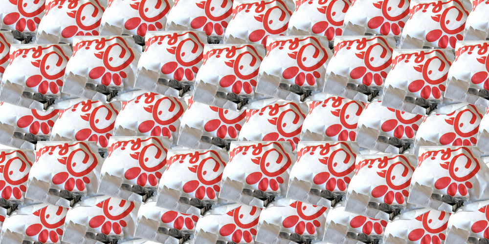

Hi, my name is Namita Dongre :^)
I am a sophomore at Carnegie Mellon University's School of Computer Science. My dream career would be to work in the intersection between machine learning and smart technology.
Here are some fun factz about me and my interests (besides coding):
- Favorite Food: IHOP's Chicken 'n' Waffles. Ever since they started adding calorie information on the menu, I've been a little hesitant to order them, though. It's a tragic tale.
- Favorite Movie: Either Million Dollar Baby or Zootopia
- Favorite Song: Starman - David Bowie or Fantastic Baby - BIGBANG. BOOM SHAKALAKA WOW FANTASTIC BABY.
- Favorite Anime: Hunter x Hunter (2011) or School Rumble which has one of the best opening/ending themes ever fight me.
- Pastimes: Currently learning how to play the piano, using a knife...for cooking obviously, gETting FIt sON, and volunteering because as corny as it sounds, there is nothing more satisfying than making a positive, sustainable difference.
- Guilty Pleasures: Riverdale......, SEVENTEEN-TEEN-TEEN-TEEN and the AMV's for XXXTentacion's music. This one is legendary.
- Last, but not least: Chick-fil-A is life and now that I'm off my college's horrendous meal plan it will most likely be 1/3 of my diet. Also, I don't have a favorite color or lucky number which makes me sad because a nice, reliable lucky number would be useful probably.

My ideal life in a picture...
I am kind of all over the place, if you haven't noticed already OTL...
I am currently a board member of my school's Project Rwanda club, which works to bridge CMU's Pittsburgh and Rwandan campuses. During the year we strive to raise awareness of Rwanda's incredibly rich culture on campus. During the summer we make a trip to Kigali to both network with the CMU students there in addition to providing a technology literacy workshop for primary school teachers there. Read more about that experience in my blog. I am also involved with Women@SCS and NCWIT.